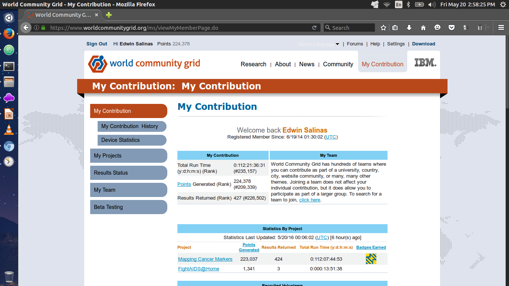

Ethical Hacking
"We work in the dark to serve the light"
Presented by: Edwin Richbald A. Salinas
Found at edos4.github.io/ethical-hacking
Fun tip: Press 'o' to see the overview! :)
Ethical Hacking
Ethical Hacking, also known as penetration testing, intrusion testing, or red teaming, is the controversial act of locating weaknesses and vulnerabilities of computer and information systems by duplicating the intent and actions of malicious hackers.
http://wiki.cas.mcmaster.ca/index.php/Ethical_HackingWha!?

Distributed Computing
The easy way
hit the arrow down key for more fun
Eh?
Distributed computing is a computer science term about using many computers to solve a big problem.
One way to solve a big problem is to use a supercomputer.
However, many scientists cannot afford them.
A cheaper way to solve a big problem is to split it into smaller problems.
These smaller problems can then be solved by computers talking to each other over a computer network.
Many computers working together... become as powerful as a supercomputer.
hit the arrow right key

hit the arrow down key for more fun
Performance
Computing intensive: The task could consume a lot of time on computing. For example, π (yellow cab)
Data intensive: The task that deals with a lot or large size of files. For example: Google, LHC(Large Hadron Collider), People having a crush on your crush(jewk!).
Robustness
No SPOF (Single Point Of Failure)
Other nodes can execute the same task executed on failed node.
Scalability
Our numbers are
growing
and so are our needs for more computing power.
You may press the right arrow key now. :)
Examples
Fun
Open-source distributed Wifi-Protected Access (WPA) cracker(clickable)
Code is available for you to learn and tinker. Create something good out of it.
"True magic is turning something bad into something good." -Ed Salinas
Effortless Superhero Duties
solve these problems while listening to musicPerks of joining the World Community Grid:
Contributions
How?

{kind=link}